Takasago, Hyogo: things to do, food and stays
Takasago · Hyogo
Takasago
Highlighted on the Hyogo map.
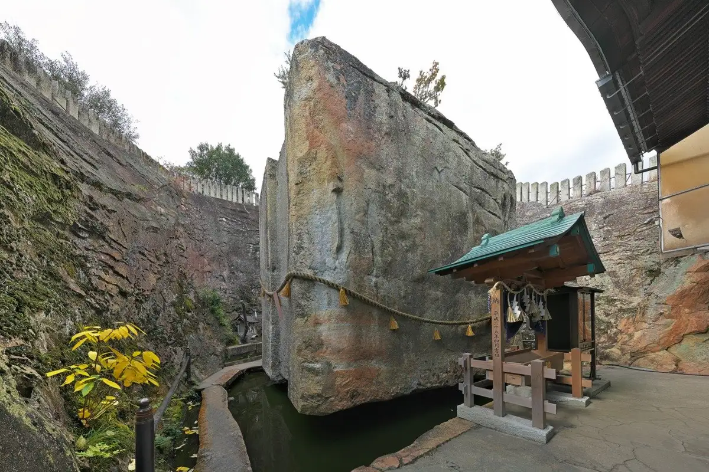
Stay
エバーホテル高砂駅前
E Bar Hotel Takasago Ekimae
Hotel in Takasago with breakfast available and a large communal bath; 1-minute walk from Takasago Station.
Dining
かき幸
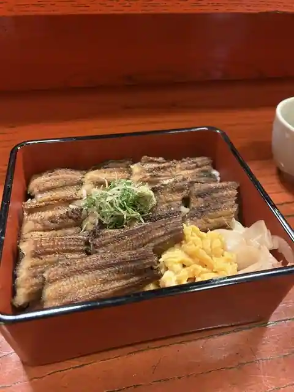
Kaki Sachi
尾道ラーメン 宝竜
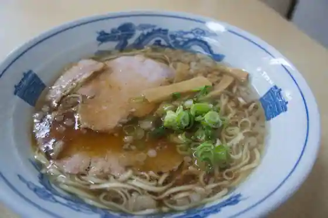
Onomichi Ramen Takara Ryu
古陰
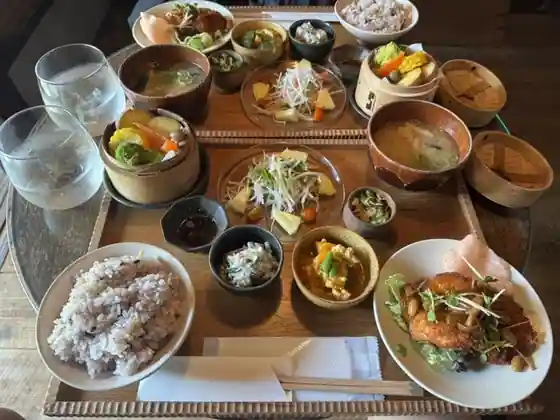
Ko Inn
じょっぴんや
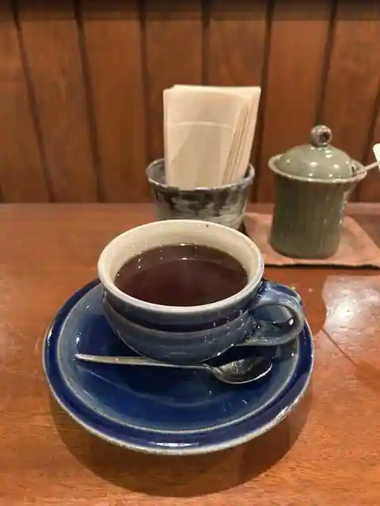
Joppinya
たまごとジェラートのお店 イエロー
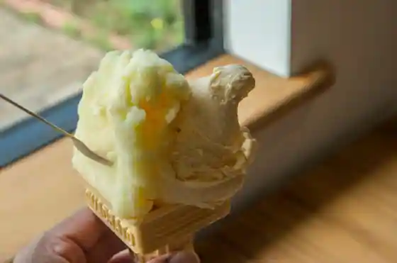
Tamagoto Jierato No Iero
キッチン カトウ
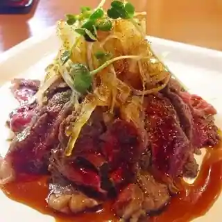
Kitchen Katou
ドイツ菓子 ホーゲル
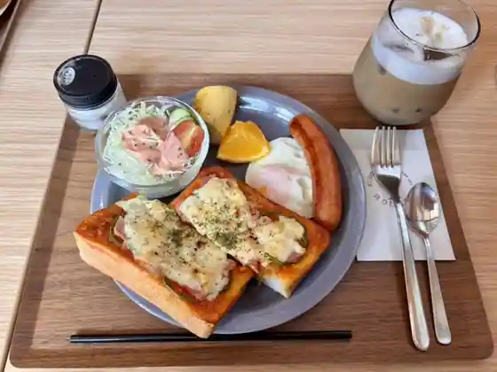
Doitsu Kashi Hogeru
一平
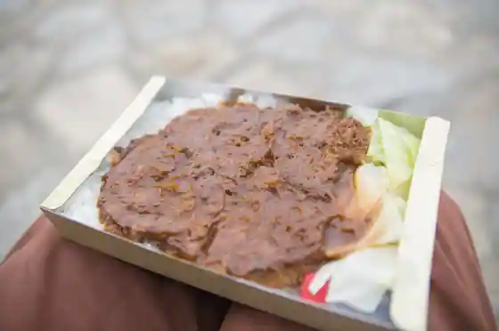
Ippei
お食事処 ごはんや
O Shokuji Tokoro Gohanya
洋食屋
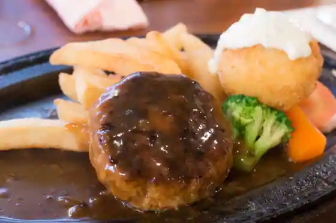
Yoshoku Ya
欧風カレー 小夢
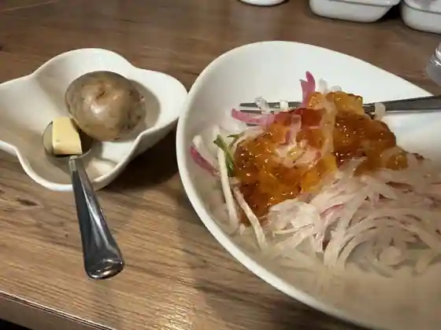
Ofu Kare Sho Yume
イヌイット
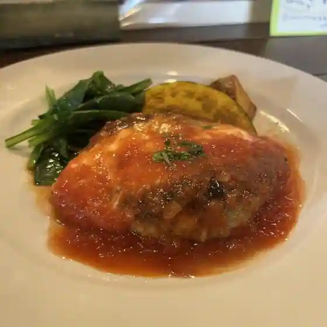
Inuitto
ベッカライ・シュン
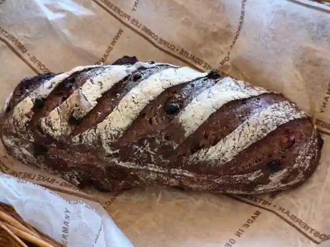
Bekkarai Shun
Hinase Kitchen
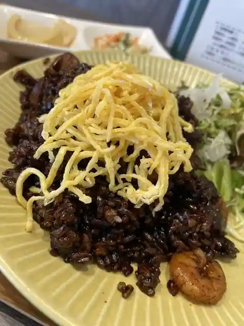
Hinase Kitchen
洋食のオーニシ 高砂店
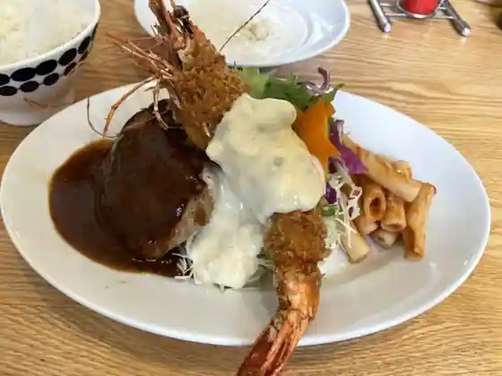
Yoshoku No Onishi Takasago
カレーの東インド商店
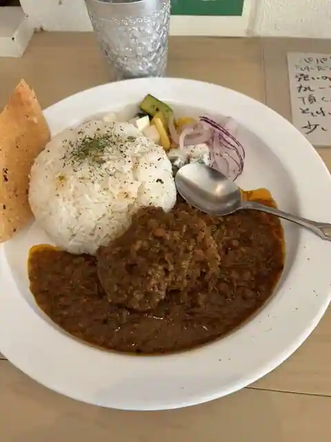
Kare No Higashi Indo Sho
らぁーめん がきの一杯
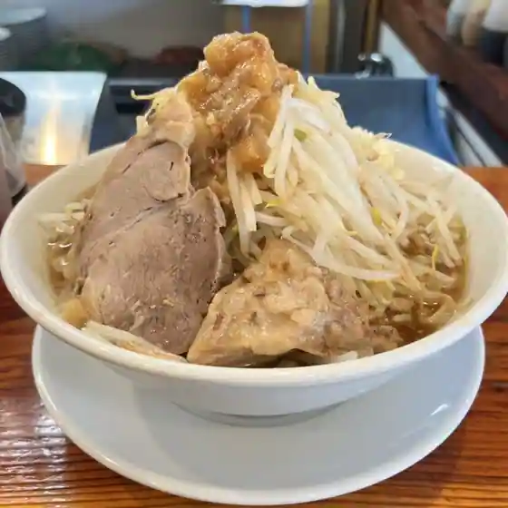
Raamen Gakino Ippai
むらたのカステラまんじゅう
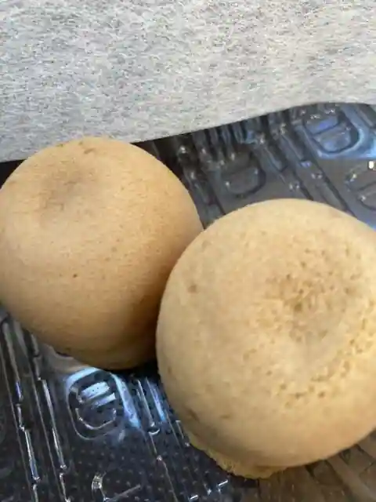
Muratano Kasutera Manju
和風ステーキ 梅はら
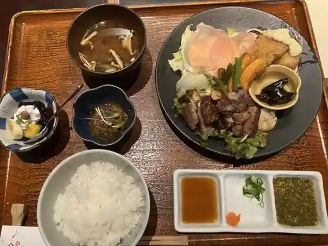
Wafu Steak Ume Hara
ミート＆デリカ旭屋
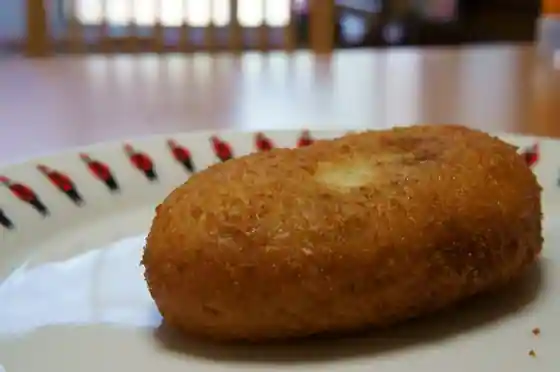
Mito & Derika Asahiya
豚骨武将 優
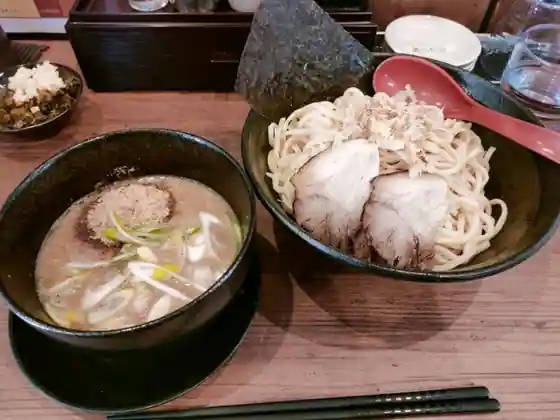
Tonkotsu Busho Yu
お好み焼きandカフェ COCOYA
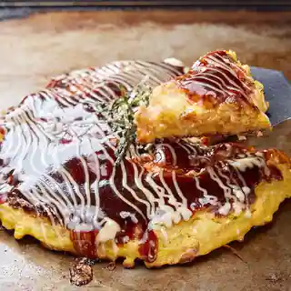
O Konomi Yaki and Cafe COCOYA
ミナミ
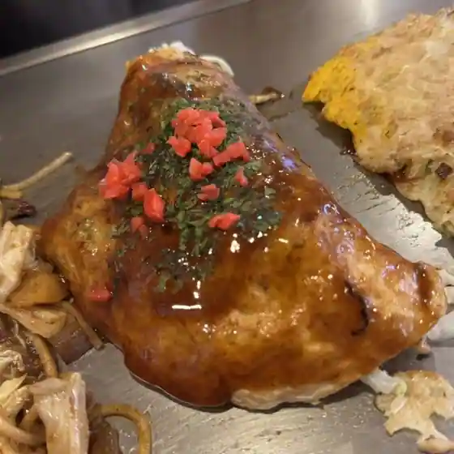
Minami
元祖ラーメン元長屋 高砂店
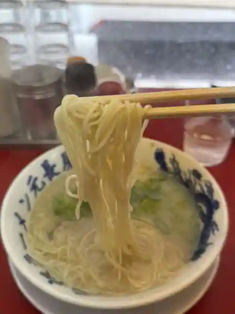
Ganso Ramen Motonaga Ya Takasago
Sights
Shoseki Shrine (Ishi no Hoden)